szcast is a keyboard-first launcher for macOS, written in Swift and SwiftUI with no dependencies and no Electron shell. Search everything, run your Raycast extensions, and never leave the keyboard — with offline dictation that formats what you said, and a focus timer that keeps out of the way.
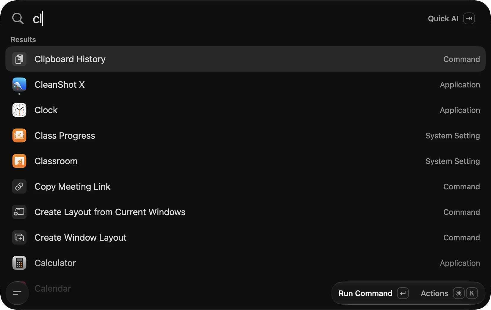
Everything in one palette
Every surface below is the real app, running on a clean install. No mockups.
Every copy is indexed in a local SQLite FTS5 database and searchable the moment you open the palette. Pins stay resident forever; the rest rotates through a bounded window.
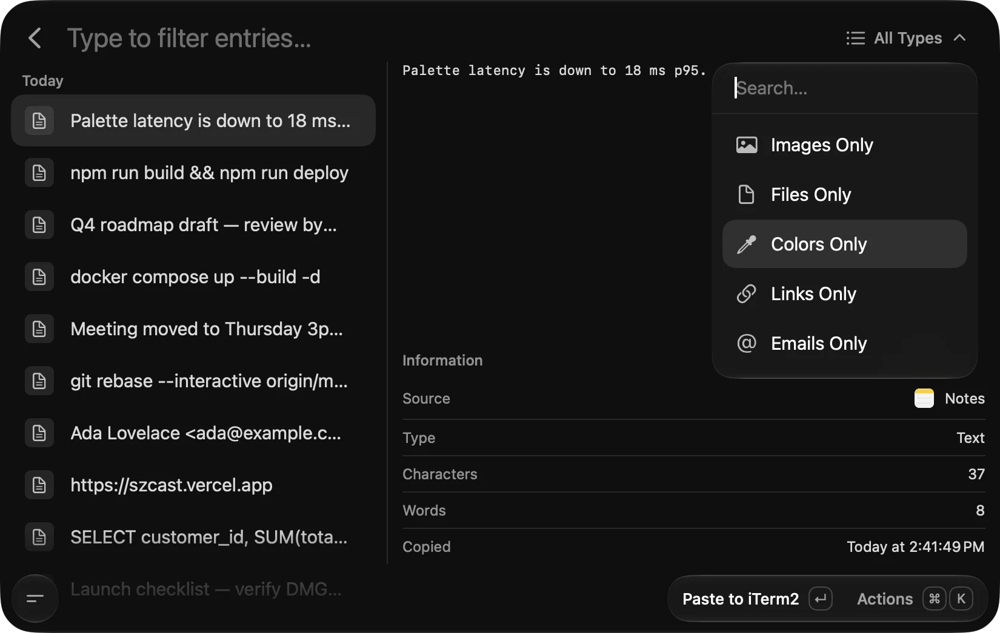
Turn any URL into a search target with {argument name="Query"}
placeholders. szcast fetches and caches favicons from Google, DuckDuckGo and the
origin itself, so the list reads like an app drawer instead of a bookmark folder.
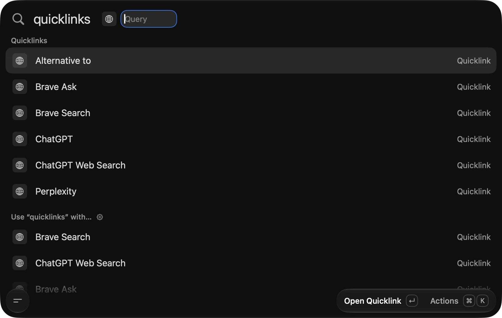
The full Unicode set with skin-tone variants, keyword aliases and category filters. Frequently used entries rise to the top and stay there.
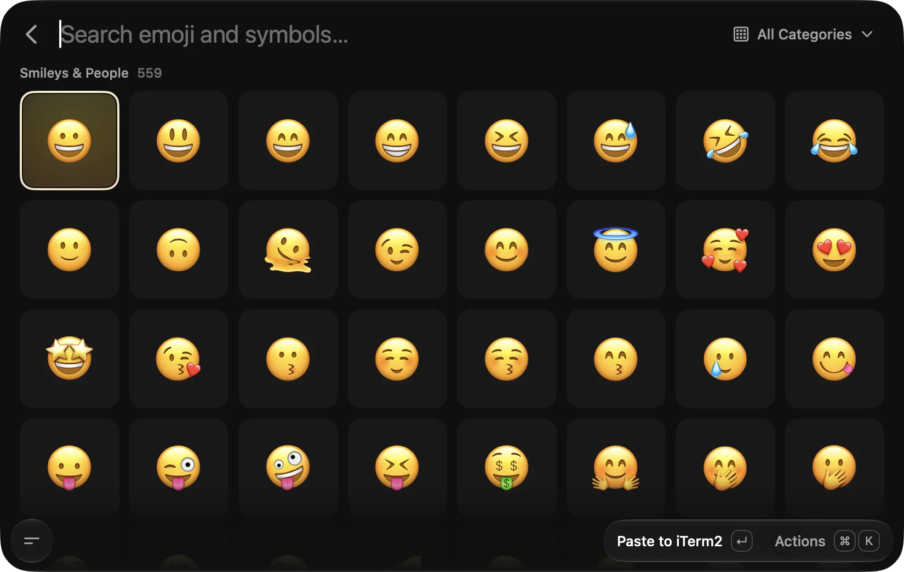
A TextKit 2 editor with inline image attachments, drag and drop, and Markdown that
reveals itself at the cursor. Files land on disk as plain .md — yours to
read, sync or grep.
~/Library/Application Support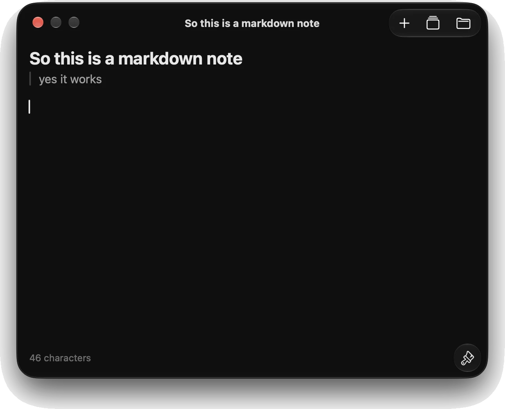
Type the expression into the palette and the answer is already there, above your other results. Units, dates and currency conversions use the same engine.
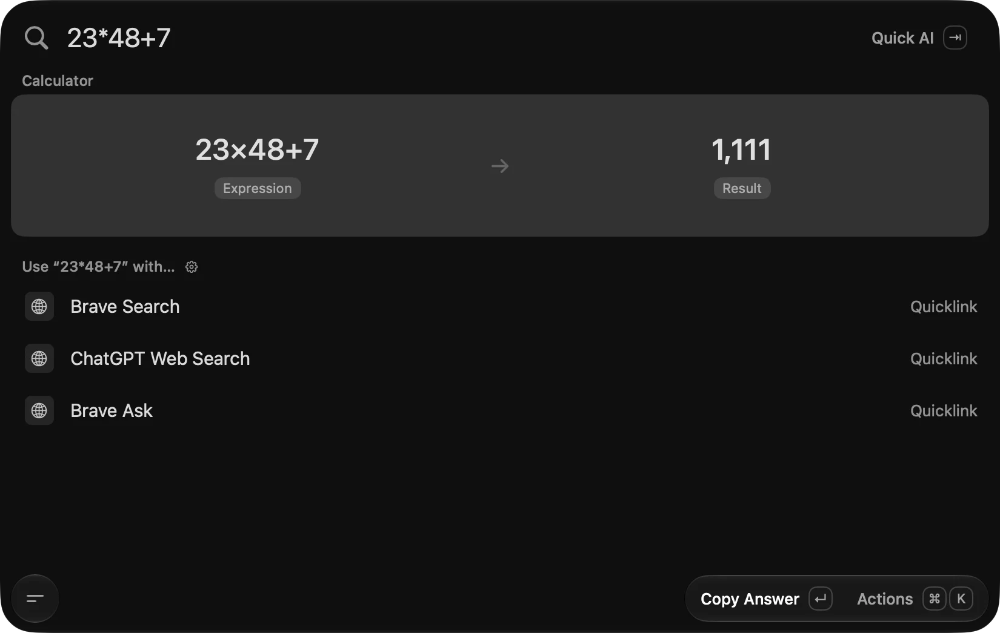
Chat against a model you own, with conversations stored on this Mac in SQLite. Point it at a local runtime or your own API key — nothing is routed through us, because there is no us.
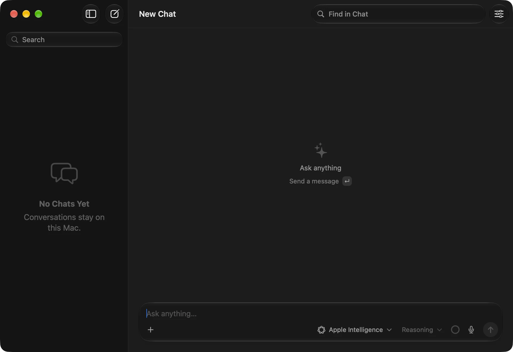
Pomodoro cycles with a menu bar countdown and non-blocking audio cues. Start it from the palette, forget about it, get told when to stop.
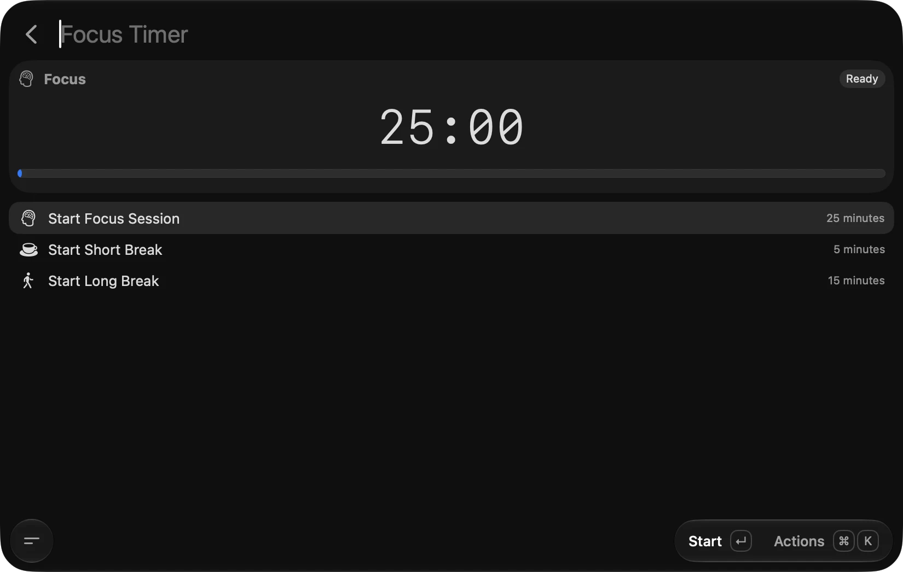
A SQLite-backed index of your files, filtered by type and previewed with native Quick Look. Selection changes update the preview without a keystroke.
⌘Y opens Quick Look on the highlighted file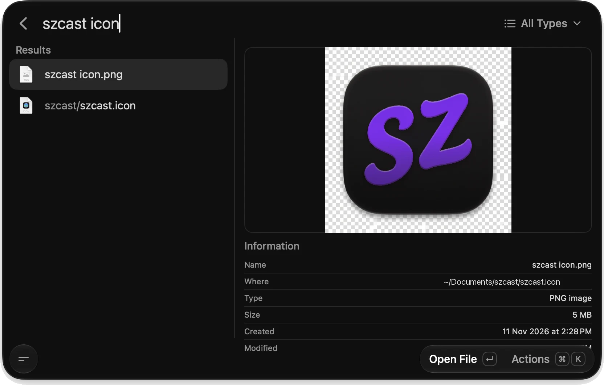
Halves, quarters, maximise and reasonable-size, all on global shortcuts. Save a multi-display arrangement as a Layout and rebuild it in one action.
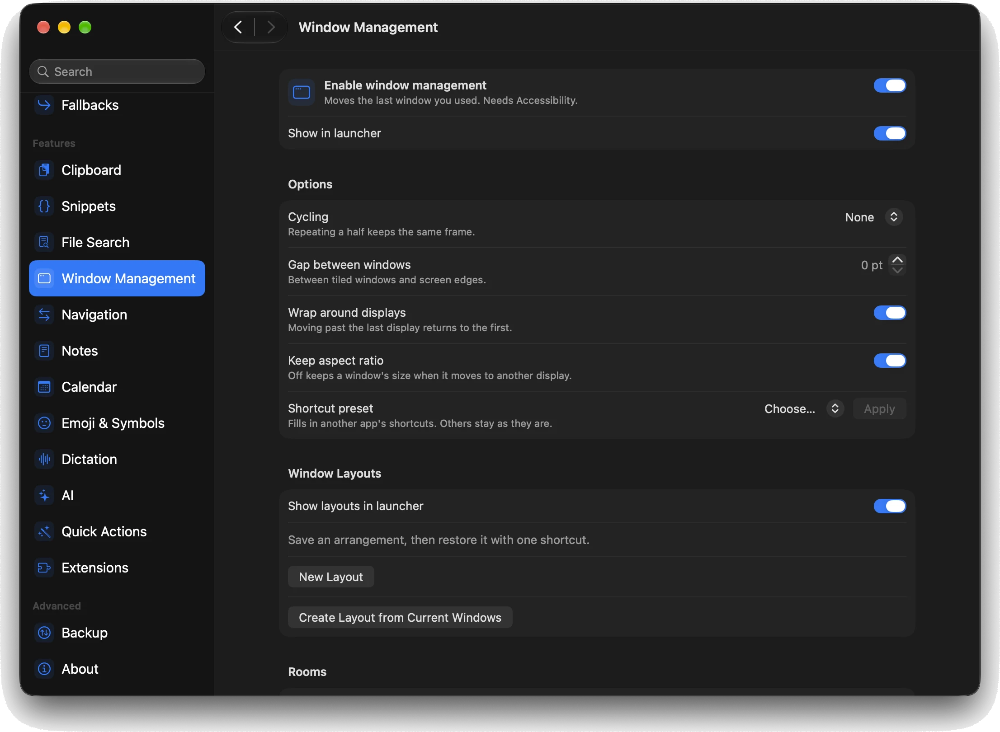
A global shortcut records from your chosen microphone, transcribes locally and pastes the cleaned text once. No model is bundled — the pane downloads a pinned Core ML conversion when you ask it to.
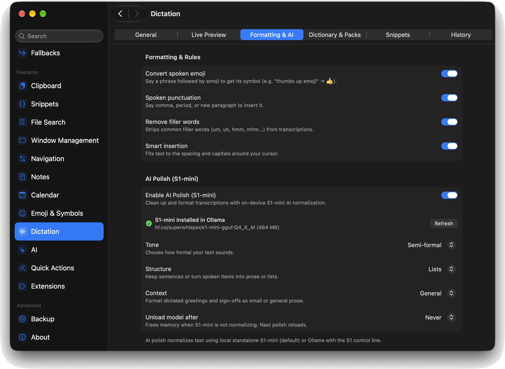
Press the dictation shortcut and a glass capsule drops over whatever you are doing. It shows a level meter, then your words as they are recognised, then the transcription pass — and disappears when the text is pasted.
The migration ran clean on the staging cluster this morning. I have attached the timing breakdown to the ticket, along with the slowest three queries and what I changed in each one. Nothing needs a second pass before Thursday.
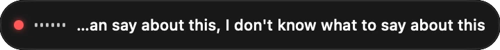
The pill above cycles through its three real states — hover to hold one.
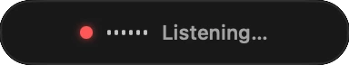
Listening — level meter, before a word is recognised.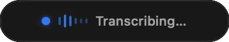
Transcribing — cleanup runs, then one paste.Beyond the fork
szcast started from Tinycast and kept its licence, its shape and its best ideas. Everything below was built here — a focus timer and its cue engine that did not exist upstream, and three shared features grown well past the point we forked.
Tinycast ships dictation on Parakeet and Qwen3-ASR. szcast keeps both and grew the feature to 41 source files from 27: vocabulary packs, a custom word list, transcription history, a hotkey preset picker, an idle-release policy, and audio ducking so your music steps back while you speak.
The cleanup pass is the part worth pointing at. A pinned S1-mini model runs locally through llama.cpp to fix grammar and filler words — with tone, structure and sign-off controls — so the text lands formatted instead of raw.
A Pomodoro timer that lives in the menu bar and never steals focus. Work, short and long break cycles, each with its own cue, plus a confetti burst where the moment deserves one.
It is the only feature in szcast that did not exist in any form upstream — the Sensory module was written to support it, then reused everywhere else.
Upstream carries a boolean that says whether a provider offers search. szcast implements the search itself: Tavily, Exa and Jina behind one service, with results folded back into the reply as numbered citations you can open.
Point it at your own API key or leave it off entirely — nothing is proxied.
Tinycast stores a quicklink as a name and a URL. szcast resolves a real favicon for each
one through a three-tier fallback — Google, then DuckDuckGo, then the origin's own
/favicon.ico — and caches it so the list loads without a network round trip.
It also ships a starter set, so a fresh install has somewhere to go.
Raycast compatibility
szcast runs community Raycast extensions through an embedded JavaScriptCore runtime. Install from a store link, keep them updated, and import your existing export.
Paste a Raycast store URL and szcast resolves, verifies and installs the package from the trusted release CDN.
Extension updates arrive without a restart and without a second app to keep running.
Reads the .rayconfig written by Raycast 2.x — an authenticated AES-256-GCM
container — and rebuilds quicklinks, snippets and settings.
A Carbon RegisterEventHotKey layer with combos, double-taps, sided modifiers
and a Hyper key. Zero dependencies.
Name a shell command, give it arguments if it needs them, and it becomes a searchable launcher row with its own shortcut.
Halves, quarters, maximise and saved multi-display layouts — resolved as fractions of the visible frame, so they survive a monitor change.
Get started
Grab the latest build from Releases.
Open the DMG and move szcast into /Applications.
Right-click → Open the first time. The build is self-signed, so macOS asks once and then remembers.
Grant Accessibility when asked — window management and menu search need it.
Or build from source
# requires Xcode 27 and the macOS 26 SDK git clone https://github.com/sauravsz/szcast.git cd szcast open szcast.xcodeproj # scheme: Szcast, then ⌘R # debug builds install as "szcast Dev", side by side ./Scripts/run-tests.sh
szcast is AGPL-3.0 and self-signed — no notarization, no licensing server, no sign-in.